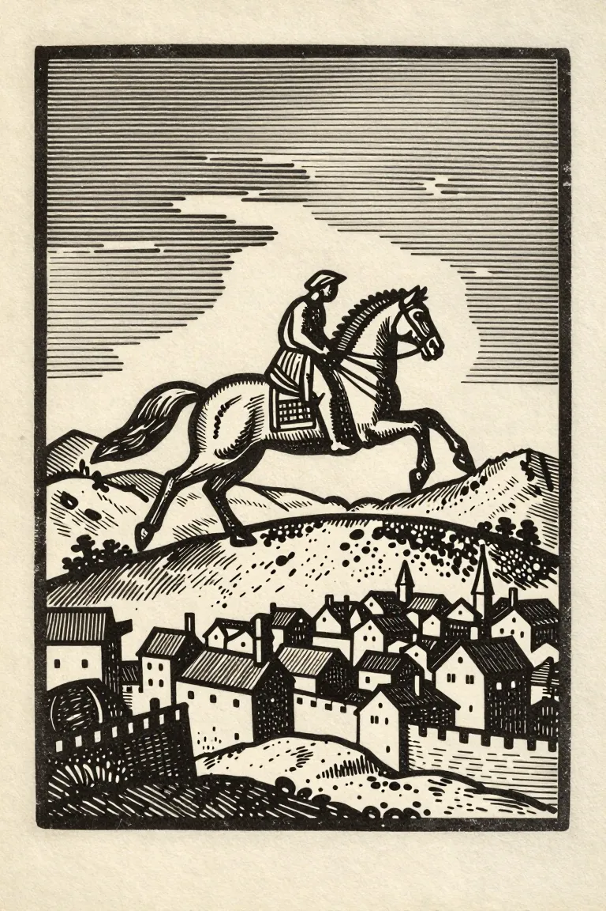

Картина, вырезанная на продольном срезе доски: резчик оставляет линии стоять, а пресс печатает их чёрным. В Нюрнберге Вольгемут и Дюрер научили рез нести тон параллельными и пересекающимися линиями, так что одна доска печаталась с набором книги.

Главная идея
Чёрная линия, стоящая на деревянной доске, способна нести форму, свет и тон, если резчик раздувает, сужает и пересекает её.
Принципы дизайна
Рисуйте каждый тон чёрными линиями на белой бумаге; у ксилографии нет серой краски и растра.
Делайте линии шириной 0,3–1,0 мм и оставляйте между ними не меньше 0,5 мм белого, чтобы дерево не ломалось.
Ведите линии по форме: изгибайте штриховку вокруг тела и держите её прямой на стене или небе.
Раздувайте линию, чтобы затемнить тон, и сужайте её в острие там, где приходит свет.
Пересекайте линии только в самой глубокой тени и держите пересечение около 60°.
Оставляйте большие участки голой бумаги для света, неба и тела.
Давайте каждой фигуре замкнутый твёрдый контур того же веса, что и самая тяжёлая штриховка.
Антипаттерны
Серая лессировка или гладкий градиент
Линии тоньше 0,2 мм, которые дерево не удержит
Растровая точка или фотографический тон
Ровная штриховка, не следующая за формой
Тонкий и прерывистый контур, как у карандашного наброска